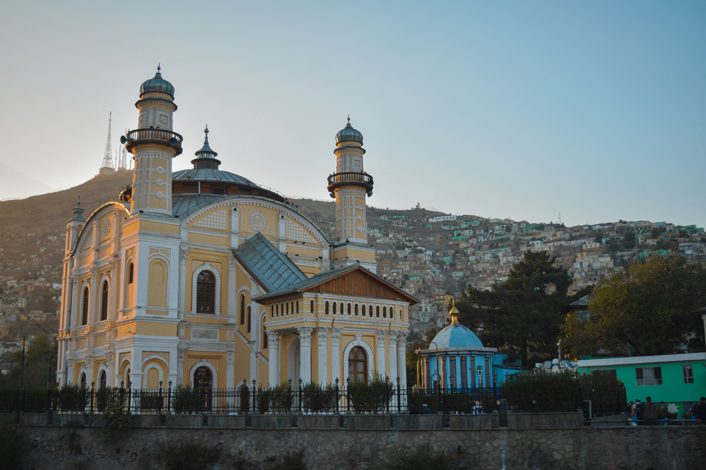
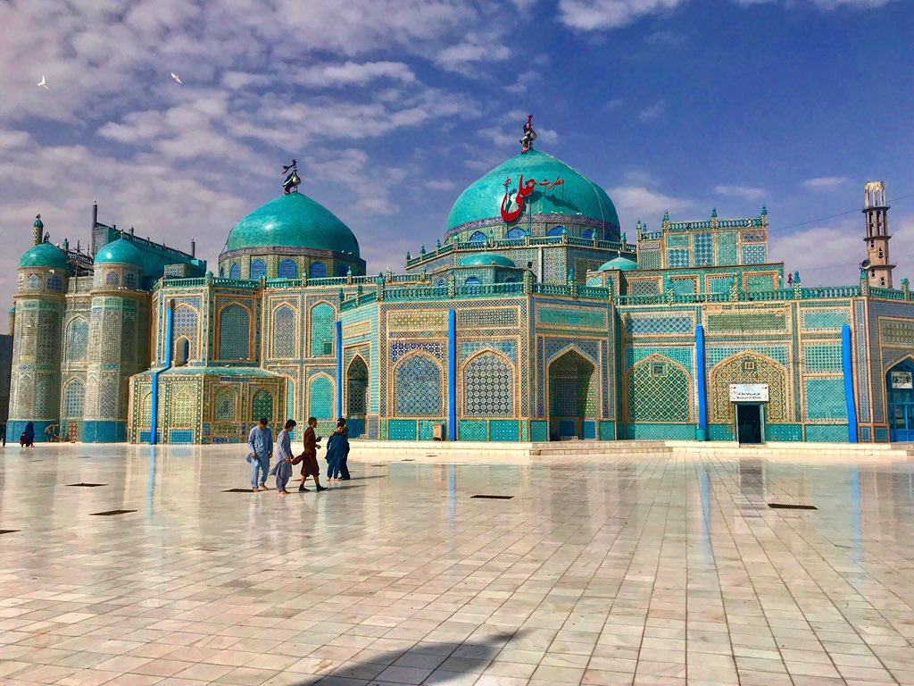
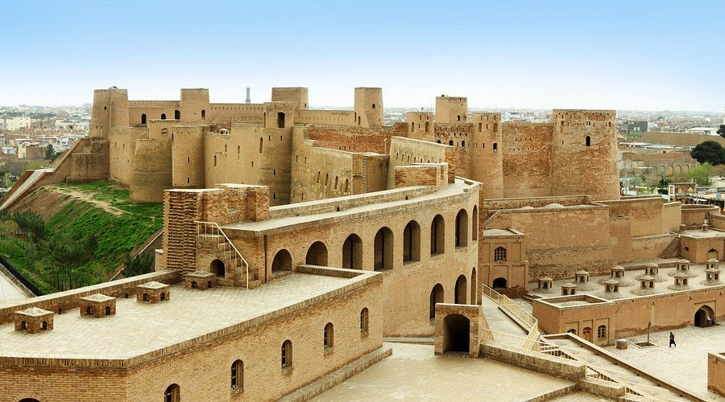
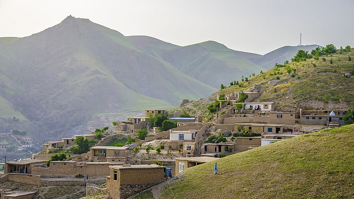
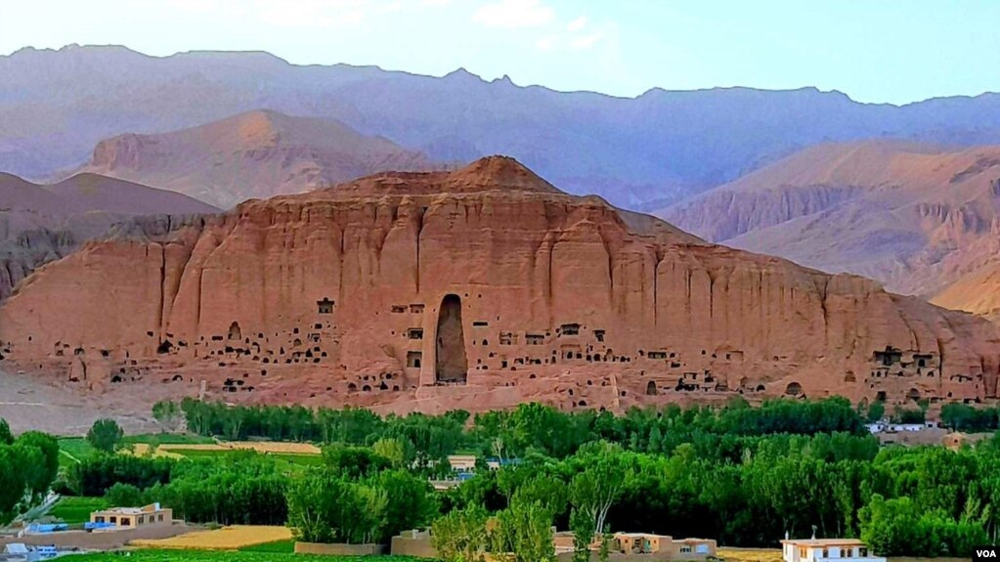
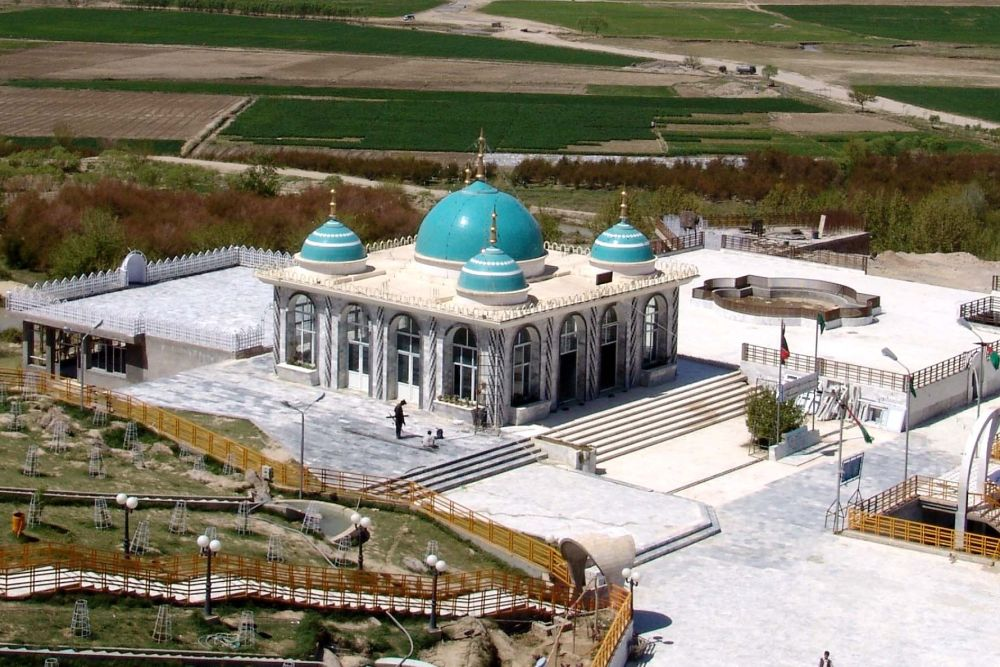

Afghanistan's cities are vibrant tapestries of history, culture, and resilience. From the ancient
citadels of Herat and Balkh to the bustling streets of Kabul and Kandahar, each city boasts a unique
cultural narrative shaped by its strategic location along the Silk Road, its rich heritage of Islamic
and pre-Islamic traditions, and its complex modern-day realities. These cities are home to a diverse
array of ethnic groups, languages, and customs, woven together by a shared sense of Afghan hospitality,
warmth, and pride.
Kabul
Kabul, the capital city of Afghanistan, boasts a rich history and diverse cultural influences.
Two notable features of Kabul are:
- Historical Landmarks and Architecture: Kabul's architecture reflects its connections to
various empires and civilizations, including Buddhist, Islamic, and Mughal styles.
- Cultural Diversity and Resilience: Kabul has been shaped by its strategic location along
the Silk Road and its complex history, resulting in a unique blend of cultures, ethnicities,
and traditions.
Balkh
Balkh is a city with a rich history dating back thousands of years.
Two notable features of Balkh are:
- Ancient Historical Significance: Balkh is believed to be one of the oldest cities in the
world, with a history that spans over 4,000 years. It was an important center of trade, culture,
and learning along the Silk Road.
- Cultural and Religious Heritage: Balkh is known for its significant cultural and
religious landmarks, including the famous Blue Mosque (Shrine of Hazrat Ali), which is said to be
the burial site of the Prophet Muhammad's cousin and son-in-law, Ali ibn Abi Talib. The mosque is a
revered site for Shia Muslims and a notable example of Islamic architecture.
Herat
Herat is a city with a rich history and cultural significance.
Two notable features of Herat are:
- Herat Citadel (Qala Iktyaruddin): A historic fortress that has been destroyed and rebuilt
several times throughout history, with roots dating back to ancient times. The citadel is a
testament to Herat's strategic importance and architectural resilience.
- Herat's Architectural Heritage: Herat is known for its stunning examples of Islamic
architecture, including the Friday Mosque (Masjid Jami), which features intricate tilework,
mosaics, and calligraphy. The city's architecture reflects its cultural and historical significance
as a major center of trade and learning along the Silk Road.
Badakhshan
Badakhshan is a province known for its stunning natural beauty and rich cultural heritage.
Two notable features of Badakhshan are:
- Pamir Mountains: Badakhshan is home to the majestic Pamir Mountains, also known as the
"Roof of the World." The region's rugged terrain, snow-capped peaks, and pristine lakes make it a
breathtakingly beautiful destination.
- Lapis Lazuli and Mineral Resources: Badakhshan is famous for its rich deposits of lapis
lazuli, a valuable blue gemstone that has been mined in the region for thousands of years. The
province is also known for its other mineral resources, including rubies, emeralds, and gold.
Bamiyan
Bamiyan is a province known for its rich history, cultural significance, and natural beauty.
Two notable features of Bamiyan are:
- Buddha Statues: Bamiyan was once home to the famous giant Buddha statues, carved into the
sandstone cliffs, which were tragically destroyed by the Taliban in 2001. The site remains a
significant cultural and historical landmark.
- Bamiyan Valley and Band-e Amir National Park: The province is surrounded by stunning
natural scenery, including the picturesque Bamiyan Valley and the breathtaking Band-e Amir National
Park, known for its turquoise lakes, waterfalls, and scenic landscapes.
Kandahar
Kandahar is a city with a rich history and cultural significance.
Two notable features of Kandahar are:
- Shrine of the Cloak: The city is home to the Shrine of the Cloak, a revered site that
houses a cloak believed to be worn by the Prophet Muhammad. The shrine is an important pilgrimage
site for many Muslims
- Historical Significance: Kandahar has a long history dating back thousands of years,
having been an important center of trade and culture. It was the capital of the Durrani Empire in
the 18th century and remains a significant city in Afghan history and politics.
Kabul

Kabul is known for its historic gardens, including the Gardens of Babur.
Balkh

Balkh is known for its Blue Mosque, a historic shrine that attracts many pilgrims.
Herat

Herat is known for its poetry and art, with a rich cultural heritage.
Badakhshan

Badakhshan is known for its Lapis Lazuli mines, a source of the precious stone
for thousans of years.
Bamiyan

Bamiyan is known for its ancient Buddha statues, a testament to the region's
rich cultural heritage.
Kandahar

Kandahar is known for its pomegranates, a fruit that is widely cultivated in the
region.